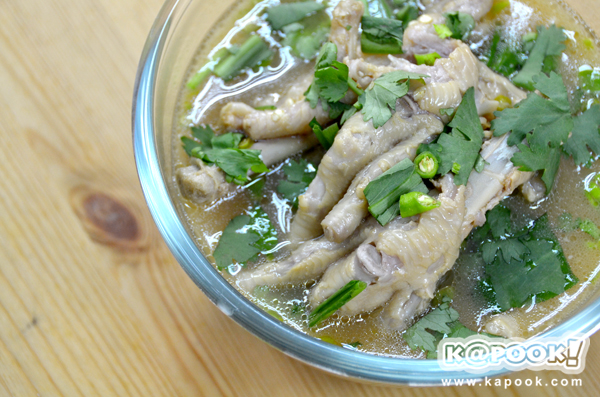

ยินดีต้อนรับเข้าสู่เว็บของฉัน
อาหารที่ชอบ คือ ต้มยำ
ส่วนผสม ต้มยำซุปเปอร์ขาไก่
• น้ำเปล่า 500-700 มิลลิลิตร
• ขาไก่ 500 กรัม
• ข่า
• ตะไคร้
• หอมแดง
• ใบมะกรูดฉีก
• พริกสด
• ผักชี
• ผักชีฝรั่ง
• ซีอิ๊วดำ 1 ช้อนชา
• น้ำปลา 2 ช้อนโต๊ะ
• ซอสปรุงรส 1 ช้อนโต๊ะ
• พริกขี้หนูซอย
• ผักชีฝรั่งซอย
• ผักชีซอย
• มะนาวตามชอบ
วิธีทำต้มยำซุปเปอร์ขาไก่
1. ใส่น้ำเปล่าลงในหม้อ นำขึ้นตั้งไฟแรง จากนั้นใส่ข่า ตะไคร้ หอมแดง และใบมะกรูดลงไปต้ม พอน้ำเดือดพล่านแล้วใส่ขาไก่ลงไปต้ม
2. ก่อนปรุงรสให้ตักส่วนผสมเครื่องต้มยำออกก่อนแล้วใส่ซีอิ๊วดำ น้ำปลา และซอสปรุงรสลงไปคนผสมให้เข้ากัน ชิมรสตามชอบ
3. ต้มต่ออีกประมาณ 30 นาที จนขาไก่เปื่อย
4. บีบมะนาวลงไป
<
สถานที่ที่ชอบ คือ น้ำตกเอราวัณ
<
น้ำตกเอราวัณเดิมเรียกว่าน้ำตกสะด่องม่องล่ายเป็นน้ำตกที่สวยงามและมีชื่อเสียงแห่งหนึ่งของจังหวัด มีทั้งหมด 7 ชั้น ความยาวประมาณ 1,500 เมตร แต่ละชั้นมีความสวยงามแตกต่างกันไป บริเวณหน้าผาเหนือน้ำตกชั้นที่ 7 เมื่อมีน้ำตกไหลบ่าจะมีลักษณะคล้ายเศียรช้าง 3 เศียร หรือที่เรียกว่า“ช้างเอราวัณ” จึงเป็นที่มาของชื่อ“อุทยานแห่งชาติเอราวัณ”
น้ำตกเอราวัณ เปิดให้บริการนักท่องเที่ยวและประชาชนทุกวันระหว่างเวลา 07.00 - 16.30 น.
คลิปเที่ยวน้ำตก
บุคคลที่ชอบ คือ มิกซ์ เฉลิมศรี
<
มิกซ์ เฉลิมศรี เป็นยูทูบเบอร์ชื่อดังหนึ่งใน แก๊งหิ้วหวี เริ่มต้นมีชื่อเสียงจากการทำรายการยูทูบ หิ้วหวีไป หิ้วหวีมา ต่อมาได้มีช่องยูทูบเป็นของตัวเองในชื่อ เฉลิมศรี โดยเป็นรายการรีวิวและสอนแต่งหน้า รีวิวร้านอาหาร และไลฟ์สไตล์ต่าง ๆ นอกจากนี้เธอยังมีความสามารถทางด้านการร้องเพลง การเต้น และการแต่งเพลงอีกด้วย โดยเฉพาะเพลง เลือดกรุ๊ปบี (B Blood Type) ของ เอิ้ก ชาลิสา ที่ฮิตกันทั่วบ้านทั่วเมือง ก็เป็นฝีมือจากการแต่งของเธอนั่นเอง
ผู้จัดทำ
ชื่อ นภัสกร กิตติเรืองชัย
รหัส 664485028
หมู่เรียน 66/96
<